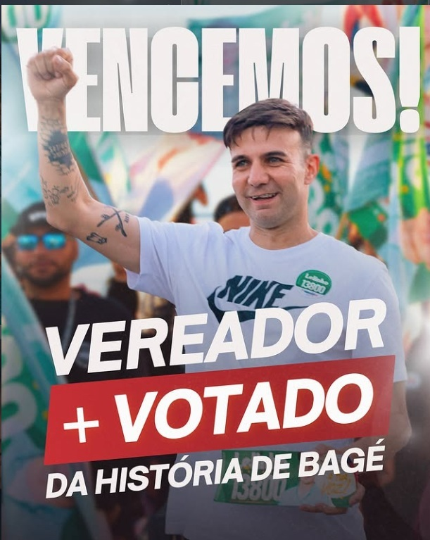

O vereador mais votado da história de Bagé | Agora deputado estadual para defender o RS

Recorde histórico em Bagé
Vereador mais votado
Prioridade na luta do mandato
Defesa do povo e transparência
Você conhece a trajetória do candidato do povo?
Mais UPAs, farmácia popular e valorização dos profissionais.
Escolas em tempo integral, merenda de qualidade e combate à evasão.
Tarifa zero, moradia digna e combate à fome.
Apoio ao pequeno produtor e desenvolvimento sustentável.
“Vou levar para a Assembleia a experiência de fiscalização e a coragem de defender os mais pobres”